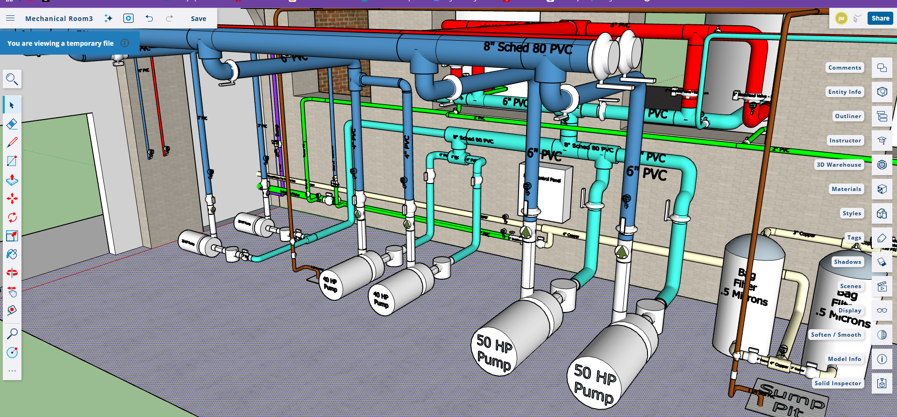
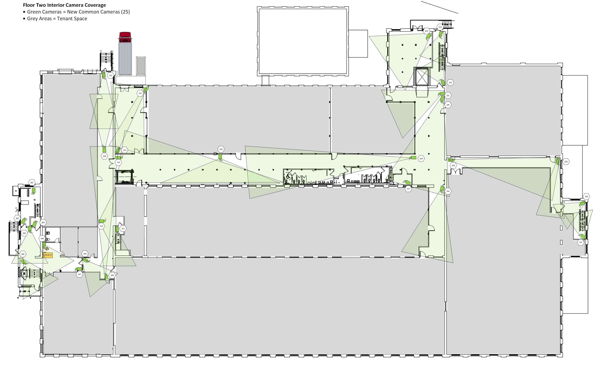
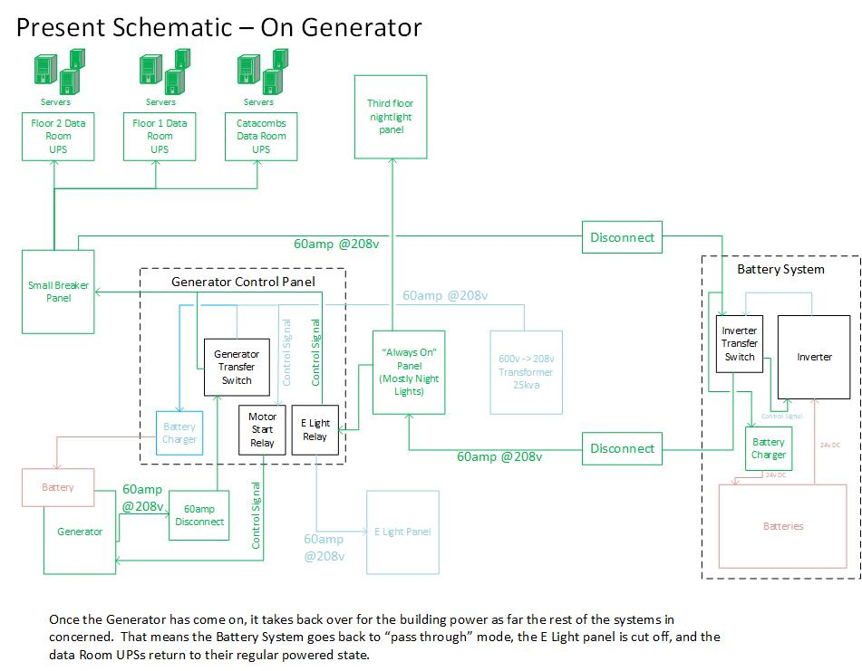
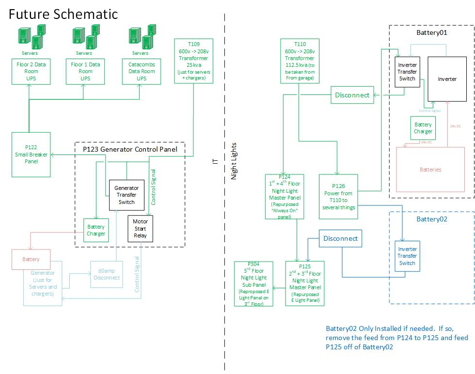

Full campus technology stack for a 240,000 sq ft multi-tenant commercial building.
One partner. Network, servers, security, power, and a 250-ton agentic water-source heat pump HVAC system with full energy recycling. Four co-located tenants run daily operations on the infrastructure we designed and built.
The core of the Milton Hilton project is a 250-ton water-source heat pump system with full energy recycling for both heating and cooling loads. Heat removed from a tenant space that needs cooling is captured in the building's water loop and delivered, in the same moment, to a tenant space that needs heating. Under typical occupancy the building does not buy much net thermal energy at all — it moves what it already has.
The system is driven by an agentic control stack: sensor networks feed a multi-agent supervisor that continuously negotiates zone comfort targets, energy cost, outside conditions, and equipment health, then issues setpoints to the controllers. Running 24/7.

We specified the control hardware, drew the wiring, and built the panel. Industrial breakers and contactors on the power side; I/O modules addressing the sensor and actuator network; a Raspberry-Pi-based supervisor bridged to the rest over RS-485. The supervisor hosts the agentic control software directly.
Every wire, every module, every addressable point in the diagram below was designed by us.

Before a single camera was installed we produced coverage plans at floor-by-floor and exterior scale. Each camera's field of view was laid out over the architectural drawings so every corridor, entrance, loading dock, and shared space had intentional coverage — and so the gaps were visible and deliberate, not accidental.
The system combines new common-area cameras with the existing cameras already approved for the site. Same recording infrastructure; same review console; one archive. Access control runs on top of the same backbone — card-based entry with tenant-specific profiles, audit logging, and integration with the camera feeds.



The campus has three data rooms, each with its own UPS. Behind those UPSes is a battery inverter and a standby generator, coordinated so that — from the servers' perspective — the site never loses power. UPS carries the cutover; batteries take over from the UPS; the generator takes over from the batteries as it comes online.
The system we inherited ran IT infrastructure and emergency lighting off a single shared backup chain. That arrangement is fragile — a fault in one load can compromise the other — and it does not meet life-safety code, which requires emergency lighting on a dedicated, independently-protected system. We redesigned it as two fully split systems, each correctly engineered for its role.


Between the HVAC plant, the control systems, the security coverage, and the power resiliency above, plus the rest:
We handled every layer of the delivery — from the mechanical and electrical design of the HVAC plant to the racks in the IDF closet to the software running on the control supervisor. One accountable practice for the whole building.
Milton Hilton is also the campus for four of our tenant engagements: Bluefox Brands, Evergreen Agriculture Industries, Mass Cannabis Growers Cooperative, and Blossom Flower. Each tenant runs on the same infrastructure we built for the landlord, extended into their leased space.
Whether it is a full campus or a single system, we'd rather talk about the problem than pitch the service. Send a short note with what you're trying to build.